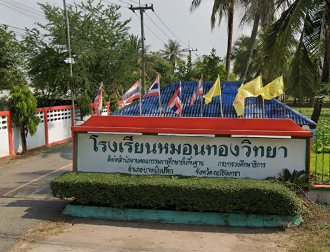

ชื่อโรงเรียน : โรงเรียนหมอนทองวิทยา
ประวิติโรงเรียน : โรงเรียนหมอนทองวิทยา สังกัดสำนักงานคณะกรรมการการศึกษาขั้นพื้นฐานกระทรวงศึกษาธิการ
ตั้งอยู่เลขที่ 85 หมู่ 7 ตำบลหมอนทอง อำเภอบางน้ำเปรี้ยวจังหวัดฉะเชิงเทรา
เดิมเป็นโรงเรียนเอกชนของมูลนิธิอิสลามฉะเชิงเทราวิทยานามว่า “อิสลามฉะเชิงเทราบึงสิงห์”
ต่อมาได้โอนกิจการให้เป็นโรงเรียนของกรมสามัญศึกษากระทรวงศึกษาธิการ
เมื่อวันที่ 1 กุมภาพันธ์ 2529 เปิดเป็นโรงเรียน แบบสหศึกษารับนักเรียนเข้าศึกษาครั้งแรกเมื่อปีการศึกษา 2529
มีนักเรียนจำนวน ทั้งสิ้น 260 คน โดยเปิดสอนในระดับชั้นมัธยมศึกษาปีที่ 1-3
ปัจจุบันโรงเรียนเปิดทำการสอนตั้งแต่ระดับชั้นมัธยมศึกษาปีที่ 1- 6 มีจำนวน 15 ห้องเรียน
ประกอบด้วยชั้นมัธยมศึกษาตอนต้น 9 ห้อง มัธยมศึกษาตอนปลาย 6 ห้อง
ตั้งอยู่บนพื้นที่ราชพัสดุ มีเนื้อที่ทั้งหมด 35 ไร่ ซึ่งได้รับการบริจาคจากนายมาน มะลูลีม ผู้จัดการมรดกโต๊ะกีเลาะ มะลูลีม